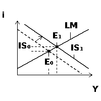
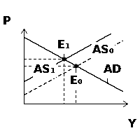
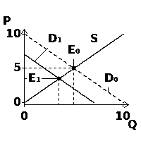
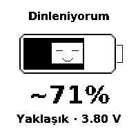

← 0.8.0 yükleyiciGrafik ve pil ekranı örnekleri
Bunlar cihaz yazılımının gerçek çizim kodundan alınmış 200×200 piksel örneklerdir. Sorular sentetiktir; canlı yapay zekâ cevabı veya donanım fotoğrafı değildir. Üst/alt gezinme şeridi bu çizim alanı örneklerinde gösterilmez.
IS–LM: kamu harcaması artışı
IS₀ / IS₁, LM ve iki denge noktası.AD–AS: negatif arz şoku
Eski eğri kesikli, yeni eğri düz çizilir.Arz–talep: talep azalması
Sayısal eksen etiketlerinin çizim örneği.Okuma kapalı: pil ekranı
Örnek 3.80 V girişinden ~71%. Canlı ölçüm değildir; yüzde voltajdan yaklaşık hesaplanır. PWR ile okuma sayfasına dönülür.
Gerçek cihazda pil ölçümü, düğme ve panel görünümü USB yüklemesinden sonra denenmelidir.